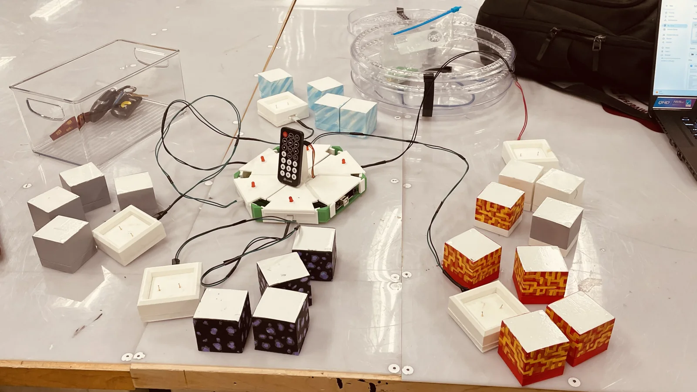
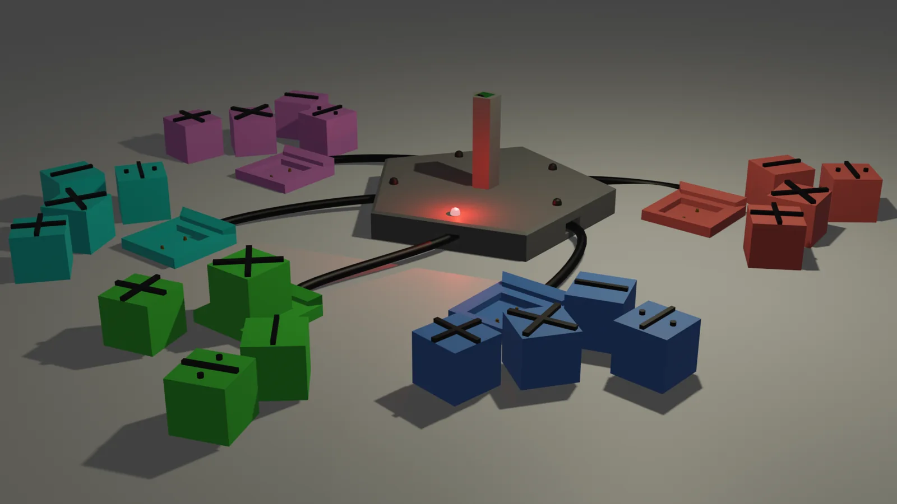
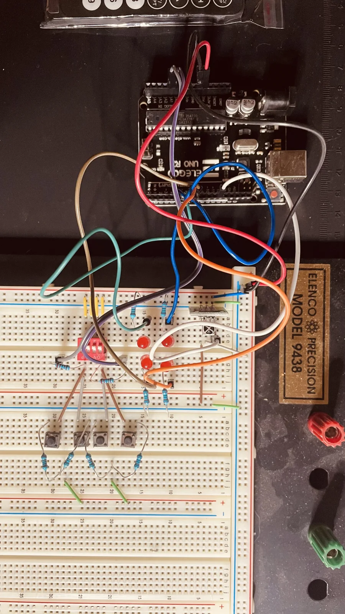
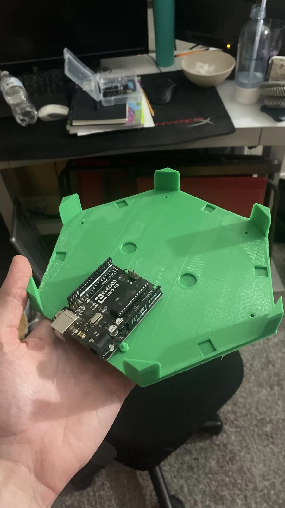
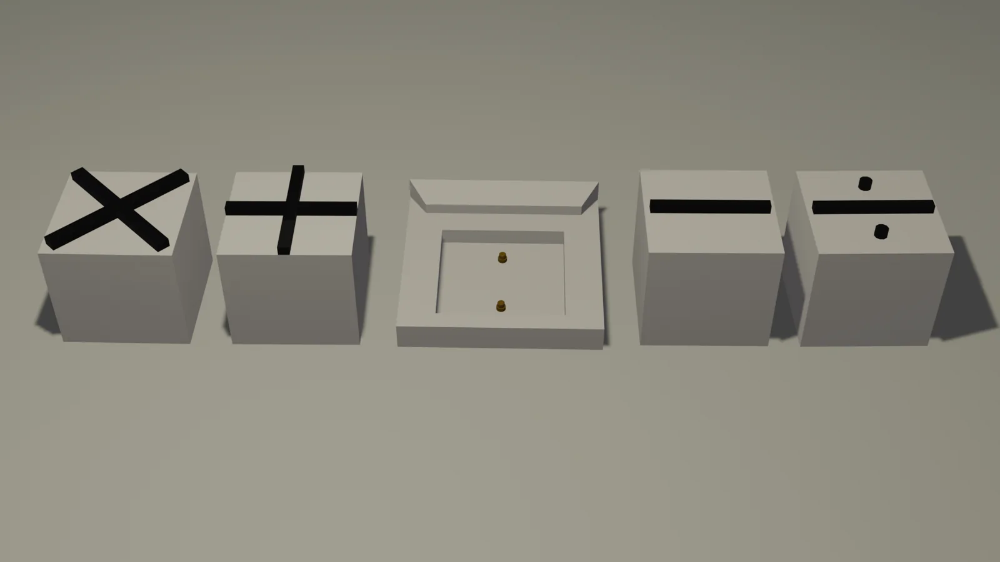
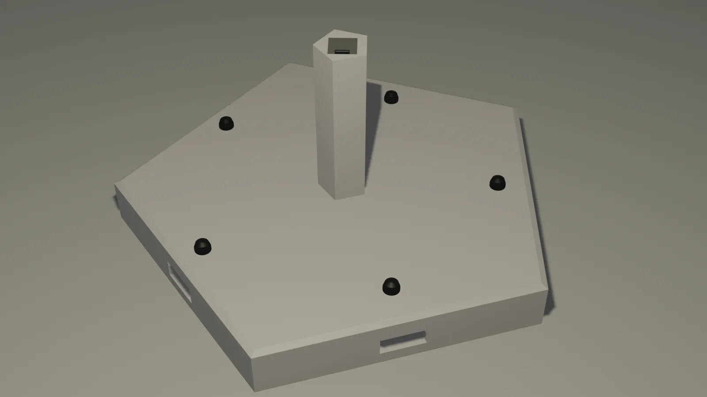
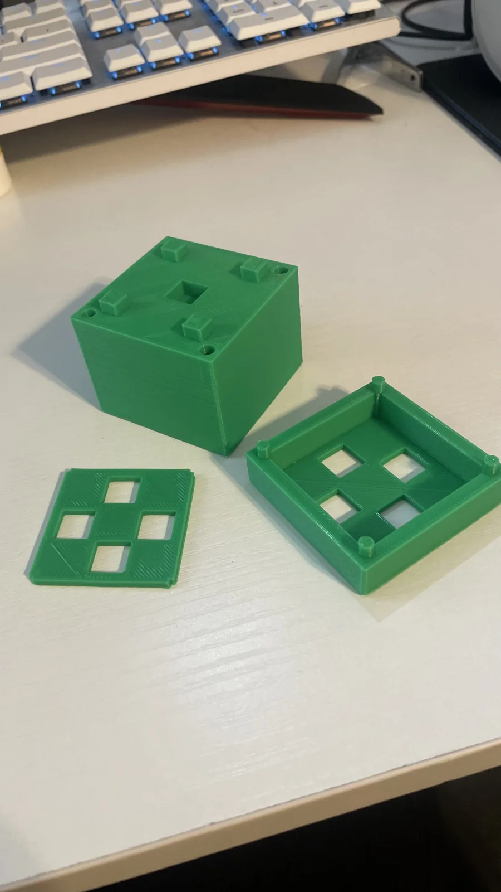
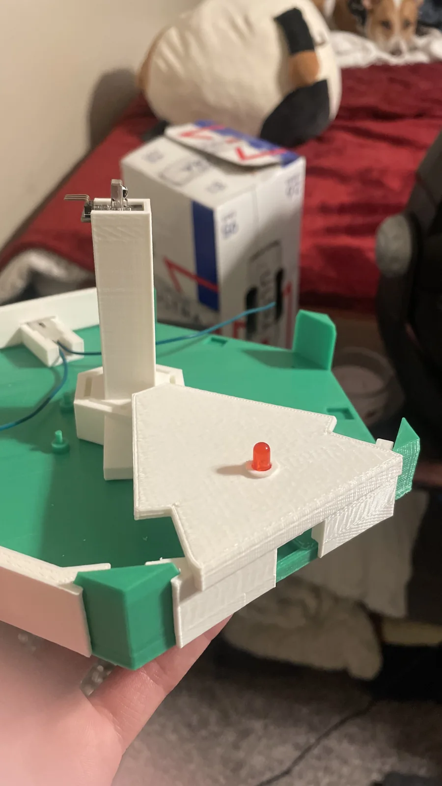

Tactile Classroom Quiz System
Competitive, hands-on learning for elementary school students


The Problem
During my sophomore year, our team was tasked with developing a project for a local elementary school. Our focus was a competitive quiz system that students could interact with physically. We called the project "MathCraft", taking inspiration from the games students were already interested in and applying that interest to math practice.
I handled the teacher interviews, which highlighted keeping students engaged, maintaining focus, and building familiarity with basic math facts. Physical learning tools were already part of the classroom, including counting cubes, linking cubes, and base-10 blocks. This gave us a starting point for a game built around objects students could pick up and place on a player station.
Design Considerations
The interviews helped connect the design to how the classroom actually operated. Students worked in groups, board games were already effective teaching tools, and normal wear and tear was a consideration for equipment used repeatedly throughout the day. These discussions led to a shared hub surrounded by individual player stations, with large answer cubes as the physical interface.


How It Worked
The teacher presented a question to the group, and students chose their answer using cubes with value markers. Each student placed their selected cube onto their dock to submit an answer. This kept the teacher in control of the questions while giving students a physical way to participate in the competition.
Electrical Design and Cube Identification
I was responsible for all of the electrical work and programming. The most difficult problem was figuring out how to identify which cube a student had placed on the dock. We used pogo pins in the base and cut copper plates for the bottom of each cube, creating an electrical connection when the cube was placed onto the station.
Each cube contained a unique resistor. We used a voltage divider circuit to turn that resistance into a voltage reading, allowing the controller to distinguish the cubes electrically. My programming used that reading to determine which cube was on the dock, connecting the physical answer to the quiz system.
Each player base connected back to the central hub. The build used an Arduino-compatible Uno controller, with prototyping carried out on a breadboard before integration into the printed hardware. The controller mounting points and openings for connections were incorporated into the hub base rather than added as a separate enclosure afterward.




Mechanical Design
Our mechanical design used three main assemblies: the answer cubes, the player bases, and the central hub. The physical interface had to account for the electrical connections, with contact plates in the cubes, pins in the player bases, and dedicated mounting features inside the hub.


The hub enclosure was divided into separate panels around a common base. This let the printed structure accommodate the controller, cable connections, and indicator lights without making the entire enclosure a single part. The center tower and removable panels can be seen in both the concept render and the assembly photos.


Fabrication and Assembly
I also handled the 3D printing. The build progressed through multiple printed revisions, with separate parts for the cube bodies, player bases, connector mounts, and hub panels. These parts came together around the electrical hardware to form the central enclosure and the complete set of player stations.




Progress Gallery
Circuit prototypes, CAD iterations, printed parts, and assembly work. Select a photo to view it larger.


School Handoff
The finished system was handed off to the elementary school after the project. My work covered the process from the initial teacher interviews through electrical design, programming, and printed hardware, bringing those requirements together in a physical system for the classroom.